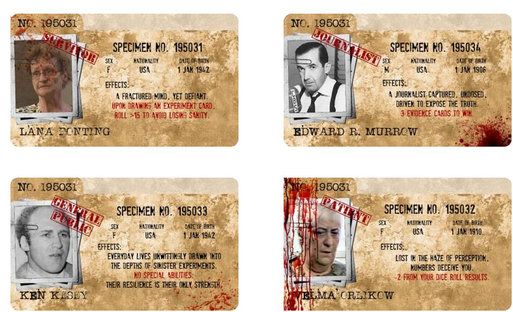
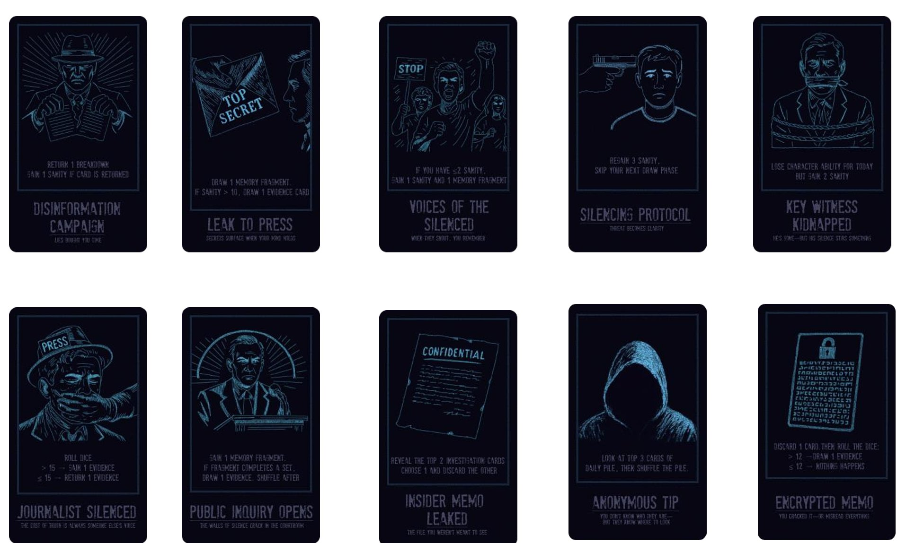
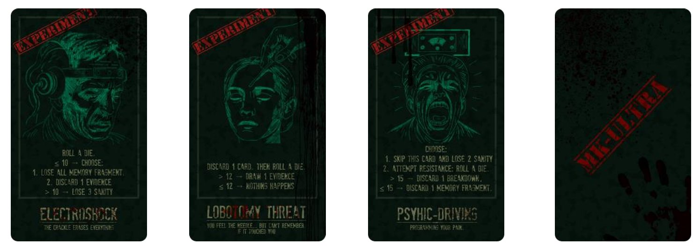
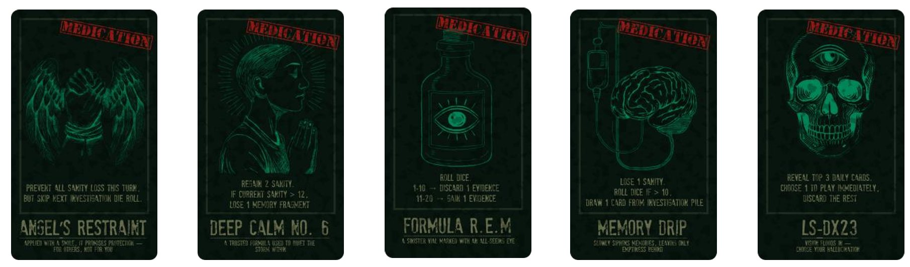
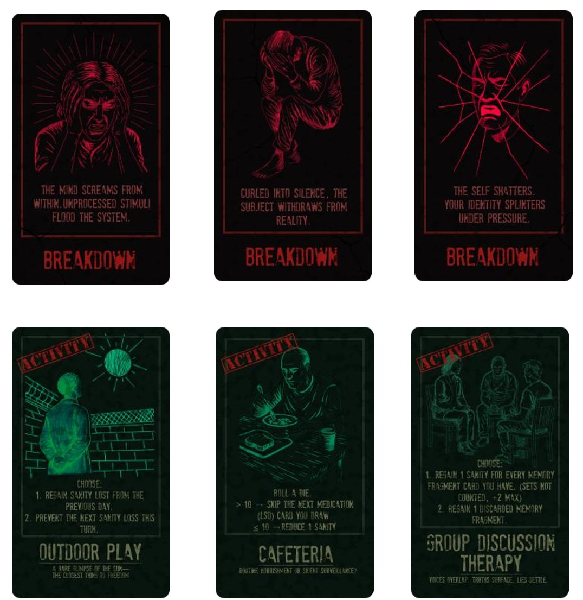
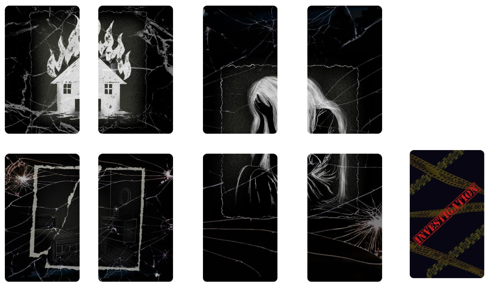
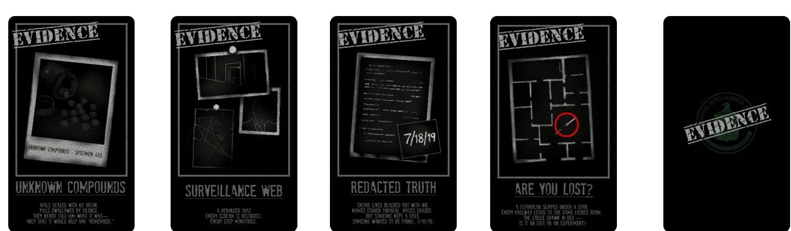
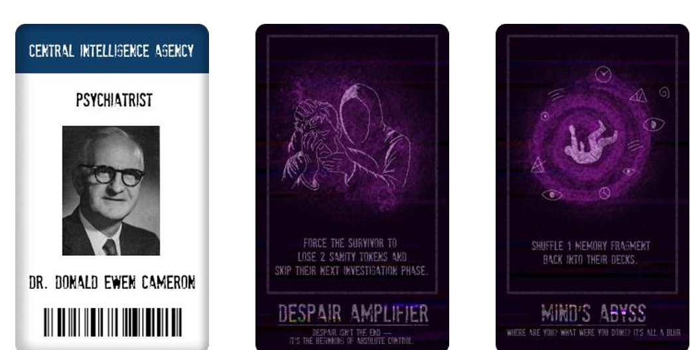

A psychological horror card game. You play one of four people trapped
in a mental institute during the CIA's MKUltra experiments. Collect 4
pieces of evidence to expose the truth before your sanity runs out.
My role
Game designer & card artist
Team
3 people
Made with
Figma
Scope
40 cards, 19 sanity tokens, a d20 + 3-card expansion

MK-ULTRA deck: Identity cardsEach changes one rule.
My role
Rules & mechanics: co-designed the core loop,
the sanity system and the win and lose conditions with my team.
Card effects & balancing: wrote and tuned what
the cards do.
Art & layout: illustrated and laid out every
card set: Identity, Experiment, Medication, Activity, Breakdown,
Investigation, Evidence and Memory Fragments.
Expansion: designed and made a 3-card expansion on
my own (below).
The tone was inspired by the psychological horror of
The Outlast Trials and the real history of the CIA's MKUltra
programme, which our team researched for the game.
How it plays
Each turn has two steps, one forced and one gambled:
The day: draw 3 cards from the Daily pile
(experiments, medication, activities and breakdowns) and resolve
them left to right. Most of them cost you sanity.
The investigation: roll a d20. On 11 or higher, you
draw from the Investigation pile, where you find memory fragments
and evidence.
You start with 15 sanity. You win with 4 Evidence cards, and you lose
if your sanity reaches 0 or you collect 3 Breakdown cards.
Stage 1 Problem
Quest A · Problem
Losing your mind makes you lose your memories
In a horror game about sanity, losing sanity should feel like
more than a number going down.
Quest B · Problem
Each identity bends the rules differently
Four playable characters needed to feel different without
separate rulebooks.
Stage 2 What I tested
We playtested the game as a team and adjusted it based on how the
sessions went.
Stage 3 What I changed
Quest A · Rule
Losing your mind makes you lose your memories
When your sanity drops below 6, any new Memory Fragment you
gain is discarded. Low sanity doesn't just bring you closer to
losing. It also stops you from collecting the evidence you
need to win.
Quest B · Rule
Each identity bends the rules differently
Each Identity card changes one rule. The Journalist only needs
3 Evidence to win. The Patient takes −2 on every dice roll.
The Survivor must roll above 15 to avoid losing sanity from
Experiment cards. The General Public has no ability.
Stage 4 What happened
Quest A · Result
Losing your mind makes you lose your memories
The theme and the mechanics push the same way: the more broken
your mind, the harder the truth is to hold on to.
Quest B · Result
Each identity bends the rules differently
4 characters that change how risky each turn feels, all using
the same deck.
The cards

MK-ULTRA deck: Investigation cardsDrawn when the d20 roll is 11 or higher.

MK-ULTRA deck: Experiment cardsFrom the Daily pile, drawn each turn.

MK-ULTRA deck: Medication cardsFrom the Daily pile, drawn each turn.

MK-ULTRA deck: Breakdown and Activity cardsFrom the Daily pile. Collect 3 Breakdown cards and you
lose.

MK-ULTRA deck: Memory Fragment cardsPairs and sets join into one picture.

MK-ULTRA deck: Evidence cardsCollect 4 to win.
My 3-card expansion
I designed and illustrated an expansion that brings the people
behind the experiments into the game:
Psychiatrist: a new Identity card based on Dr.
Donald Ewen Cameron, a psychiatrist involved in the real MKUltra
experiments.
Despair Amplifier: forces the survivor to lose 2
sanity and skip their next investigation phase.
Mind's Abyss: shuffles 1 of the survivor's Memory
Fragments back into the deck, undoing progress.

MK-ULTRA expansion: Psychiatrist, Despair Amplifier, Mind's
AbyssMy 3-card expansion, designed and illustrated on my own.